Единицы цвета и размера в CSS
Единицы цвета
Все цветовые значения в CSS определяются как цветовое пространство sRGB (или стандартный красный, зелёный и синий). Цвета в пределах этого пространства образуются путём смешивания вместе красного, зелёного и синего цветовых каналов, отражая способ, каким телевизоры и мониторы генерируют все разные цвета, которые они показывают. При смешивании различных уровней красного, зелёного и синего мы можем создать миллионы цветов и обнаружить почти любой желаемый цвет.
В настоящее время существует четыре основных способа представления цвета sRGB в CSS: ключевые слова, шестнадцатеричная запись, значения RGB и HSL.
Ключевые цвета
Значения ключевого слова — это названия (такие, как red, green или blue), которые отображаются данным цветом.
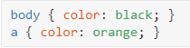
Названия ключевых слов и соответствующие им цвета определяется спецификацией CSS. CSS предлагает 145 названий цветов, от самых простых (black, white, orange, yellow, blue и др.) до более специфичных (lawngreen, orchid, crimson и др.).
Полный список этих названий можно найти в:
- Спецификации CSS | W3C Recommendation
- CSS Colors | W3Schools (быстрый поиск)
Поскольку названия цветов трудно запомнить и вы, вероятно, хотите весьма конкретные цвета, названия цветов используется не часто.
Цвета RGB и RGBa
rgb()
Значения цвета RGB задаются с помощью функции rgb(). Функция принимает три значения — красный, зелёный и синий, разделенные запятыми, каждое из которых является целым числом от 0 до 255. Значение 0 будет чисто чёрным, значение 255 будет чисто белым.
Соответственно, первое значение в функции rgb() представляет красный канал, второе зелёный канал, а третье значение — синий канал.
Если бы мы хотели переделать оттенок оранжевого в качестве значения цвета RGB, то он будет представлен, как
rgb(255, 102, 0).
Чёрный цвет получается, когда нет никакого количество красного, зелёного или синего цвета:
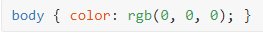
С другой стороны спектра, белый — это полное количество каждого красного, зелёного и синего:
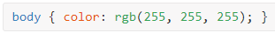
rgba()
Единица цвета rgba() — это rgb(), к которому мы добавляем значение альфа (в диапазоне от 0 до 1 в десятичном значении), она определяет прозрачность цвета. Значение 0 создаёт полностью прозрачный цвет, в том смысле, что он будет невидимым, а значение 1 создает полностью непрозрачный цвет. Любое десятичное значение от 0 до 1 создаст полупрозрачный цвет.
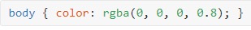 Слегка прозрачный чёрный цвет.
Задавать цвет прозрачным требуется для смешивания с фоном, в результате цвет будет выглядеть по разному в зависимости от контекста. Это особенно полезно для цвета фона.
Цвета HSL и HSLa
hsl()
Задавая цвет с помощью функциии hsl(), думайте об этом, как о цветовом круге.
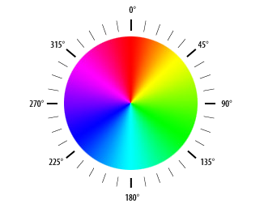
Внутри скобок функция hsl() принимает три значения, разделённых запятыми, подобно rgb(). Однако, вместо комбинации красного, зелёного и синего цветов, вы указываете:
- оттенок — значение в диапазоне от 0 до 360; определяет угол цвета на этом круге: какой цвет вы хотите;
- насыщенность — в диапазоне от 0% до 100%; определяет, сколько этого цвета вы хотите: насколько оттенок нужен насыщенным, где 0 будет серым, а 100% полностью насыщенным.
- яркость — в диапазоне от 0% до 100%; определяет, насколько ярким вы желаете цвет: насколько тёмным или светлым будет оттенок, где 0 полностью чёрный, а 100% полностью белый.
Возвращаясь к оранжевому оттенку, значение цвета HSL мы бы записали как
hsl(24, 100%, 50%)
Цвет в hsl() легче для понимания чем rgb(), потому что ожидаемый результат очевиднее. Вы в основном определяете цвет за три разных шага и можете играть с каждым значением для получения желаемого цвета. Если вы хотите жёлтый оттенок, то можете начать со значения hsl(50, 68%, 56%) и поменять значения насыщенности и яркости, чтобы найти конкретный оттенок, который вы ищете.
hsl() более удобен для восприятия человеком, тогда, как rgb() более ориентирован на компьютеры.
hsla()
hsla(), подобно rgba(), включает альфа-канал или прозрачность. Четвёртое значение, которое лежит в пределах между 0 и 1, включая десятичные числа, должно добавляться к функции для определения степени прозрачности.
Наш оттенок оранжевого цвета с прозрачностью 50% будет представлен, как
hsla(24, 100%, 50%, 0,5).
Значение цвета HSL является новейшим значением доступным в CSS. Из-за его возраста и поддержки в браузерах он, однако, не так широко применяется.
Шестнадцатеричные цвета
Цвета в CSS могут быть также определены через шестнадцатеричные значения, вроде #db4e44.
Шестнадцатеричные значения цвета начинаются с решётки (#), затем идёт три или шесть символов. Используются цифры от 0 до 9 и буквы от А до F, в верхнем или нижнем регистре. Эти значения отображают красный, зелёный и синий цветовые каналы.
В шестисимвольной записи первые два символа представляют красный канал, третий и четвертый символы представляют зелёный канал, а последние две цифры представляют синий канал. В трёхсимвольной записи первый символ представляет красный канал, второй символ представляет зелёный канал, а последний символ представляет синий канал.
Если в шестисимвольной записи первые два символа одинаковы, третий и четвертый символы одинаковы и последние два символа одинаковы, то запись может быть сокращена до трёх символов. Для этого повторяющиеся символы из каждой пары должны использоваться только один раз. Например, оттенок оранжевого представлен шестнадцатеричным цветом #ff6600, который также может быть записан как #f60.
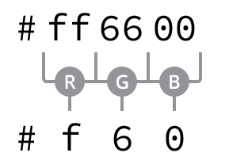
Пары символов получаются путем преобразования чисел от 0 до 255 в шестнадцатеричный формат. Математика здесь немного сложна и достойна отдельной книги, но полезно знать, что 0 равен чёрному, а F равен белому.
Для общего понимания, что такое шестнадцатеричные значения, давайте посмотрим, как работают двоичные и десятичные:
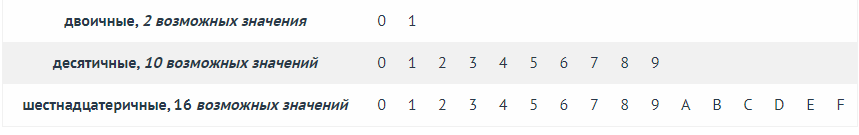
Люди используют десятичную систему. У нас есть 10 символов для формирования чисел.
В шестнадцатеричной системе у нас есть 16 символов для формирования чисел: цифры 0-9 и буквы A-F в виде символов. Поскольку 0-9 недостаточно, мы также используем A-F. И всё начинается с нуля.
- цифра 4 в шестнадцатеричной системе — это 4;
- число 12 в шестнадцатеричной системе — это C;
- число 16 в шестнадцатеричной системе — это 10, потому что после того как закончатся символы (последний из которых F), вы добавляете второй символ слева и повышаете на единицу (0 становится 1), а правая часть начинается снова (от F до 0).
Запоминать это не требуется, но понять, как работают шестнатеричные числа нужно. Самое главное, это помнить о том, что есть 16 шестнадцатеричных символов.
Подобно RGB, шестнадцатеричное значение цвета представляет собой сочетание красного, зелёного и синего, причём каждый из них представляют в шестнадцатеричном значении, например DB для красного, 4E для зелёного и 44 для синего.
Поскольку красный, зелёный или синий может содержать только два символа, их возможные значения 16 *16 = 256, что отражает цвет в RGB!
Почему бы тогда не использовать RGB, если здесь все так сложно?
Как правило, при выборе цвета вы не пишете его напрямую. Вы либо используете палитру цветов или копируете/вставляете его из Photoshop или выбираете цветовую палитру где-то ещё. Например, CSS Colors | W3Schools или Adobe Color
Шестнадцатеричные значения легче копировать и вставлять, так как они содержат только шесть символов.
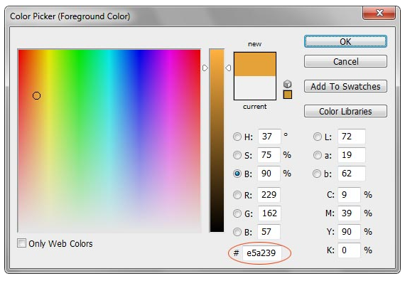
Проще скопировать и вставить единственное поле, чем три отдельных.
В CSS вам нужно всего лишь добавить перед шестнадцатеричным значением цвета решётку (#).
Какой способ выбрать?
Если вы не намерены использовать любой прозрачный цвет, придерживайтесь шестнадцатеричных значений, так как их проще копировать/вставить и они не займут много места в вашем коде.
Если вы хотите некоторую прозрачность, преобразуйте цвет из шестнадцатеричного значения в RGBA и используйте для цвета rgba().
Если вы хотите поиграть с вашим цветом непосредственно в браузере, попробуйте hsl().
Единицы размера
Есть два разных вида размеров — абсолютные и относительные, каждый из которых использует различные единицы измерения.
Абсолютные размеры
Абсолютные значения размера являются простейшими значениями, поскольку они привязаны к физическим единицам, таким как дюймы, сантиметры или миллиметры. Поскольку компьютерные экраны используют пиксели для отображения содержимого, это самая распространённая единица размера в CSS.
Пиксели
Пиксель равен 1/96 дюйма. Таким образом, в дюйме 96 пикселей. Точное измерение пикселя, тем не менее, может слегка отличаться на устройствах с высокой и низкой плотностью пикселей.
Пиксель может быть использован для задания фиксированной ширины элемента:
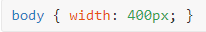
Или установить размер текста:
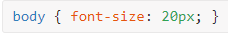
Пиксели в CSS являются простыми, поскольку они определяют абсолютные значения и не зависят от других наследуемых свойств CSS. Они также широко используются для позиционирования и расстояния.
С учётом смены устройств просмотра на альбомный режим и различных размеров экранов, пиксели потеряли часть своей популярности. В качестве абсолютных единиц измерения они не предлагают достаточной гибкости. Пиксели, однако, надёжны и отлично подходят для начала работы. Мы собираемся опираться на них совсем немного, пока досконально изучаем HTML и CSS.
Относительные размеры
В дополнение к абсолютным значениям размеров есть также относительные размеры. Они немного сложнее, так как не являются фиксированными единицами измерения, а основаны на размере другого измерения: они полагаются на родителя и/или предка элемента.
Проценты
Проценты, представленные в виде обозначения %, являются одним из самых популярных относительных значений. Размеры в процентах определяются по отношению к размеру другого объекта.
К примеру, блочные элементы, такие как абзацы, естественным образом занимают всю доступную ширину. Следующее правило CSS изменит их размер до половины доступной ширины.
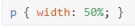
Проценты могут помочь задать другие свойства CSS, такие как размер текста.
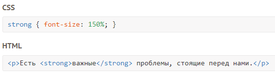
Есть важные проблемы, стоящие перед нами.
Проценты являются чрезвычайно полезными для установления высоты и ширины элементов и создания макета веб-страницы.
em
em это размер, который вычисляется от значения font-size элемента
Одна единица em эквивалентна размеру font-size. Например, если у родителя font-size задан, как 20px и вы применяете font-size: 0.8em; к дочернему элементу, то этот дочерний элемент будет отображать font-size как 16px (20px*0.8).
Единица em интересна для определения размера шрифта элементов HTML относительно друг друга. Для создания привлекательной и комфортной для чтения веб-страницы вам необходимо обеспечить визуальную глубину. Например, вы хотите, чтобы ваши <h1> были вдвое больше, чем основной текст, ваши <h2> в 1,5 раза больше, а боковая панель немного меньше. Это можно легко получить в CSS:
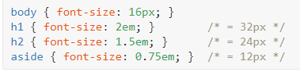
Если вы решите изменить размер текста <body>, относительные размеры заголовков и боковой панели изменятся соответственно и ваша веб-страница останется визуально сбалансированной.
Только изменив одно значение, поменяются и все остальные значения:
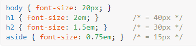
rem
Единица rem похожа на em, но вместо зависимости от родительского значения, она опирается на значение корневого элемента, которым является элемент <html>.
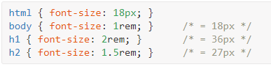
Разница между rem и em в том, что значение rem фиксировано, в то время, как значения em умножаются друг с другом.
Если вы установили html { font-size: 18px; }:
- 2rem всегда будет равно 36px, независимо от того, где оно используется в вашем CSS;
- 2em всегда будет равно удвоенному font-size родителя, что не обязательно равно 36px.
Быстрый пример, где 2em отличается от 2rem:
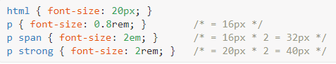
<span> полагается на значение font-size у <р>, в то время как <strong> полагается на значение font-size у <html>.
Какую единицу использовать?
Я бы рекомендовал начать с пикселей: поскольку это абсолютная величина, они не зависят от контекста элемента. Пиксели простые, позволяют установить размер текста, ширину и высоту изображения, толщину границы, координаты положения и др.
Проценты и значения em могут быть использованы наряду с пикселями, особенно для относительных размеров текста.